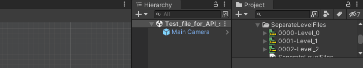
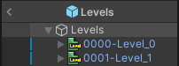

Level Importer
In addition to the imported project, separate level files can also be imported.

The file format for imported separate level files is .ldtkl.
To enable separate level files, toggle on the checkbox in LDtk's project settings.
There are many benefits to using separate level files:
- Helps enable modular level design. (ex. randomly-generated dungeon with levels for dungeon pieces)
- Only modified level files will reimport instead of the project and all levels, resulting in quicker import speeds when applicable
- Only the dependencies involved in a particular level will reimport the level instead of involving all possible dependencies (Entities, IntGrid tiles)
- Only the level assets in the scene are loaded into memory during runtime.
- Level files can be imported simultaneously in parallel, resulting in faster import times when reimporting multiple levels. Available in Unity 2021.2 or higher at
Project Settings > Editor > Asset Pipeline > Parallel Import
For speed reasons, using separate level files is preferable, especially for any larger scale game projects.
Inspector
The importer inspector displays a reference to the level's project which can be clicked to locate the project in the hierarchy window.
The project can also be re-imported from here with a quick button.

Depend On Dependencies
Used by both project and level. See here.
Nested Prefabs
Imported LDtk levels can be nested in prefabs.
